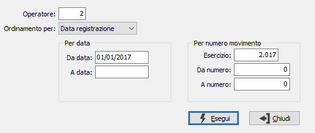

Stampa rettifiche
Il programma consente l’elaborazione e la stampa, anche in anteprima, di un report dei movimenti di rettifica a partire dal numero del movimento o dalla data indicata dall’operatore, con possibilità di limitare l’elaborazione ai soli movimenti inseriti da uno specifico utente.

OPERATORE: Eventuale codice dell'operatore che ha effettuato la registrazione dei movimenti. Viene proposto in automatico il codice dell'operatore che lancia il programma. Se si desidera effettuare la stampa di tutti i movimenti indipendentemente dall’operatore che li ha inseriti, digitare il codice “0”.
ORDINAMENTO PER: Combo box per definire i criteri di ordinamento. Valori ammessi: Data registrazione (la stampa viene effettuata in ordine di data di registrazione); Numero movimento (la stampa viene effettuata in ordine progressivo di numero movimento)
DA DATA: informazione significativa in caso di ordinamento per data. Inserire l’eventuale data di inizio della selezione dei movimenti da stampare. Confermando a vuoto, la selezione inizia con la prima data valida dell’esercizio in corso.
A DATA: informazione significativa in caso di ordinamento per data. Inserire l’eventuale data di fine della selezione dei movimenti da stampare. Confermando a vuoto, la selezione termina con l’ultima data valida dell’esercizio in corso.
ESERCIZIO: informazione significativa in caso di ordinamento per numero movimento. Indicare il codice numerico dell’esercizio contabile di cui si vuole effettuare la stampa della prima nota.
DA MOVIMENTO: informazione significativa in caso di ordinamento per numero movimento. Indicare l’eventuale numero di movimento da cui si vuole iniziare la stampa. Confermando a vuoto, la stampa inizia dal primo movimento valido per l’esercizio indicato.
A MOVIMENTO: informazione significativa in caso di ordinamento per numero movimento. Indicare l’eventuale numero di movimento con cui si vuole terminare la stampa. Confermando a vuoto, la stampa termina con l’ultimo movimento valido per l’esercizio indicato.
Inseriti tutti i parametri, premendo il bottone Esegui viene lanciata la stampa.